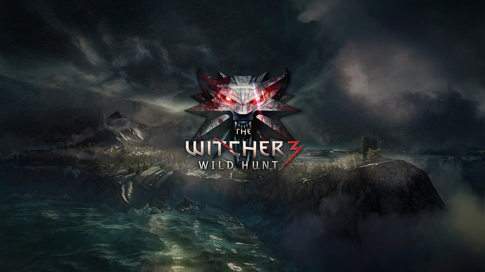

.png)
The Witcher 3: Wild Hunt

The Witcher 3 Wild Hunt es la tercera entrega de la saga de juegos creada por CD Projekt Red inspirada en los libros del mismo nombre creados por Andrzej Sapkowski, que narran las aventuras de Gerart de Rivia, un brujo o witcher que debe luchar contra monstruos y que no es un humano cualquiera, ya que goza de unos sentidos más desarrollados, una fuerza descomunal y un instinto asesino que lo convierte en un cazador perfecto.
Plataforma
PC
Xbox One
Play Station 4
Noticias
En este título, Gerart de Rivia tendrá que investigar qué anda haciendo en el mundo la Cacería Salvaje o Wild Hunt (un grupo de sanguinarios elfos de otra dimensión) y porqué están tan interesados en encontrar a Ciri, su discípula, quien tiene un poder que interesa a esta entidad. Con este argumento y sin saber mucho más empezamos nuestra aventura con este RPG que se acaba de lanzar y que llevaba ya varios años siendo el juego más esperado de muchos gamers.
En The Witcher 3 Wild Hunt nos encontraremos con un inmenso continente lleno de misterio que nos asombrará a cada paso que demos por el inmenso detalle en los escenarios, los importantes cambios de clima donde podemos encontrar desde lluvias torrenciales hasta fuerte sol, pasando por tormentas de nieve, todo influenciado también por la hora del día (sí, aquí hay un sistema de día y noche y hasta ciclos de la luna) y la cantidad de ubicaciones que tendremos que descubrir.

Novedades
Wild Hunt es un juego de mundo abierto donde podremos movernos libremente por un continente y más adelante podemos desplazarnos a las Skellige, unas islas al oeste. Aunque bien podemos seguir las misiones principales, en nuestro camino hacia los objetivos siempre encontraremos alguno que otro suceso que nos detenga y nos desvíe de nuestra misión.
Todos los habitantes en el mundo de The Witcher 3 tienen una profesión y algo que hacer –incluso algunas veces nos pedirán ayuda–; la fauna silvestre también está moviéndose “libremente” y hasta los monstruos y enemigos también tienen su vida.
El sistema de combate resulta ser muy completo y es difícil compararlo con el de otros juegos, ya que toma ideas prestadas de distintos títulos dándoles su propio toque y haciéndolas sentir como una sólida novedad.
Los combates son rápidos y se goza de gran movilidad al atacar y defenderse, no al nivel de los juegos Souls, pero sí nos exigen estar muy pendientes de los movimientos de nuestros enemigos para realizar nuestro ataque; tenemos la opción de elegir entre un ataque potente y otro rápido y de decidir si lo realizamos luego de usar alguna de nuestras magias (o señales como se les dice en el juego) que usualmente debilitan los oponentes. Como armas contamos con dos espadas, una de plata para atacar monstruos y una de acero para enfrentar humanos y también tenemos acceso a una ballesta que realmente poco utilicé durante mi aventura.
Esto hace que tengamos que preocuparnos mucho por cómo peleamos y qué estrategias vamos a utilizar para derrotar a los cientos de tipos de enemigos que vamos a enfrentar y que, de acuerdo al terreno, su vocación y nuestras armas serán una amenaza distinta. Los hay de todo tipo, desde humanos común y corrientes hasta animales salvajes, algunos son de nuestro tamaño, otros son potentes engendros demoníacos, espectros del otro mundo o poderosos monstruos expertos en usar la magia.
Trailer